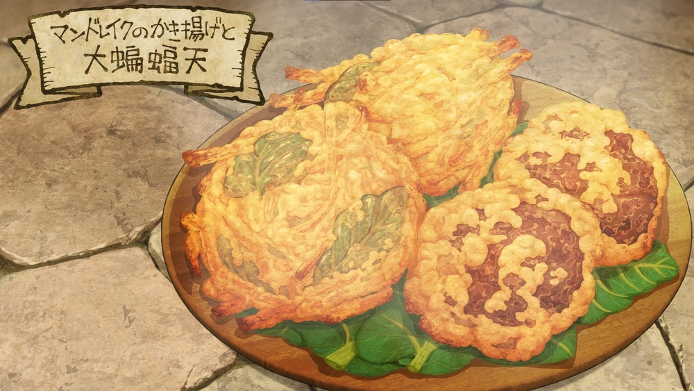

Mandrake Kakiake and Giant Bat Tempura

Shredded mandrake and marinated bat breast are coated in batter and deep fried in olive oil, tempura-style.
Ingredients
serves 4
- Mandrake (3 med. size)
- Big Bat breast meat (400 grams)
- Basilisk egg (1)
- Weak flour (150 grams)
- Water (170 cc)
- Soy sauce (1 tbsp)
- Sake (1 tbsp)
- Salt (a pinch)
- Garlic & ginger (to taste)
Directions
- Put the olive oil to heat while we do the rest of the preparations.
- Remove the skin of the Giant Bat and cut the meat into chunks and lightly score it.
- Rub in the seasonings in the meat and let it marinate a bit.
- Skin the Madrake, cut the arms and legs first. If you unravel the tangled up limbs you can tear them off by
hand.
Then you peel and chop up the Mandrake body (pare away the discolored part where the limbs are).
- Beat a Basilisk egg with some water, and sift in some flower.
- Stir it lightly so it doesn't clump and add the mandrake to the batter.
- Scoop the mandrake into the oil and fry it just enough so it doesn't fall apart.
- Finished!